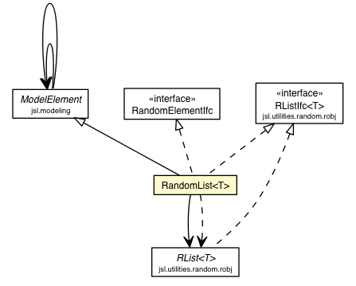

jsl.modeling.elements
Class RandomList<T>

java.lang.Object
 jsl.modeling.ModelElement
jsl.modeling.elements.RandomList<T>
jsl.modeling.ModelElement
jsl.modeling.elements.RandomList<T>
- All Implemented Interfaces:
- Iterable<T>, Collection<T>, List<T>, RandomElementIfc, StreamOptionIfc, ObservableIfc, IdentityIfc, RandomStreamIfc, RElementIfc<T>, RListIfc<T>
public class RandomList<T>
- extends ModelElement
- implements RListIfc<T>, RandomElementIfc
Allows for random selection from a list of objects as supplied by the RList
The list is created empty unless a List is supplied upon construction. Thus,
if the user does not supply an initial list then there will not be any elements to
select from during the replication.
By default the list is cleared prior to each replication. If a List is
supplied to initialize the list at the beginning of each replication, then
it will be used to set up the elements in the list
Note: The underlying streams for the random selection process are controlled
by the replication, see RandomVariable
Note: If the user calls setRandomList() or calls any mutator methods on the list,
during the replication the list will be changed; however, the supplied initial list
will not have been changed and will be used to reinitialize the list at the
beginning of each replication. If the user does not want this behavior,
then overwrite the initialize() method or turn
off automatic initialization via the ModelElement interface,
setInitializationOption(false).
Warning: If the user uses ANY mutator methods (e.g. add() etc) prior to
the start of a replication, then the list will be CLEARED prior to the
the replication (or set to the supplied initialization list). If the user
does not want the list cleared or initialize use setInitializationOption(false).
Warning: If the user changes the supplied initial list during or between replications, then
each replication may not start under the same conditions.
Warning: There may not be elements in the list, thus a call to getRandomElement() may return null
The default RList is DUniformList, equally likely selection over the elements in the list
| Fields inherited from class jsl.modeling.ModelElement |
AFTER_EXPERIMENT, AFTER_REPLICATION, BEFORE_EXPERIMENT, BEFORE_REPLICATION, CONDITIONAL_ACTION_REGISTRATION, DEFAULT_TIMED_EVENT_PRIORITY, INITIALIZED, MONTE_CARLO, myAfterExperimentOption, myAfterReplicationOption, myBeforeExperimentOption, myBeforeReplicationOption, myInitializationOption, myLengthOfWarmUp, myModelElements, myMonteCarloOption, myObservableComponent, myReplicationEndedOption, myTimedUpdateActionListener, myTimedUpdateEvent, myTimedUpdateInterval, myTimedUpdateOption, myTimedUpdatePriority, myWarmUpActionListener, myWarmUpEvent, myWarmUpIndicator, myWarmUpOption, myWarmUpPriority, NONE, REMOVED_FROM_MODEL, REPLICATION_ENDED, TIMED_UPDATE, UPDATE, WARMUP |
| Methods inherited from class jsl.modeling.ModelElement |
addObserver, addObserverToModelElements, afterExperiment_, afterExperiment, afterReplication_, beforeExperiment_, beforeReplication_, beforeReplication, cancelTimedUpdateEvent, cancelWarmUpEvent, changeParentModelElement, checkForAfterExperiment, checkForAfterReplication, checkForBeforeExperiment, checkForBeforeReplication, checkForConditionalActionRegistration, checkForInitialize, checkForMonteCarlo, checkForRemoveFromModel, checkForReplicationEnded, checkForTimedUpdate, checkForUpdate, checkForWarmUp, checkObserverState, clearModelElementObservers, constructorCalls_, contains, countObservers, createEntity, createEntity, createQObject, deleteObserver, deleteObserverFromModelElements, deleteObservers, getAddedWhileReplicationWasRunningFlag, getAfterExperimentOption, getAfterReplicationOption, getAllCounters, getAllElementsNeedingRemoval, getAllRandomElements, getAllResponseVariables, getAllVariables, getBeforeExperimentOption, getBeforeReplicationOption, getChildModelElementIterator, getCurrentReplicationNumber, getDefaultEntityType, getDefaultFIFOQueueDiscipline, getDefaultLIFOQueueDiscipline, getDefaultRandomQueueDiscipline, getDefaultRankedQueueDiscipline, getExecutive, getExperiment, getId, getInitializationOption, getInitializationOrderAsString, getLengthOfWarmUp, getModel, getModelElementsAsString, getModelElementsAsString, getModelElementsAsString, getMonteCarloOption, getName, getNumberOfModelElements, getObserverState, getParentModelElement, getPreviousObserverState, getRemoveFromModelPriorToRepFlag, getReplicationEndedOption, getSimulation, getSpatialModel, getStringLabel, getThisElementsCounters, getThisElementsRandomVariables, getThisElementsResponseVariables, getThisElementsVariables, getTime, getTimedUpdateInterval, getTimedUpdateOption, getUpdateNotificationFlag, getVariable, getWarmUpEventTime, getWarmUpOption, indent, initialize_, isTimedUpdateEventScheduled, isWarmedUp, isWarmUpEventScheduled, montecarlo_, montecarlo, notifyAfterExperimentObservers, notifyAfterReplicationObservers, notifyBeforeExperimentObservers, notifyBeforeReplicationObservers, notifyConditionalActionRegistrationObservers, notifyInitializationObservers, notifyMonteCarloObservers, notifyObservers, notifyObservers, notifyRemovingFromModelObservers, notifyReplicationEndedObservers, notifyTimedUpdateObservers, notifyUpdateObservers, notifyWarmUpObservers, registerConditionalActions_, registerConditionalActions, removeFromModel, replicationEnded_, replicationEnded, setAddedWhileReplicationWasRunningFlag, setAfterExperimentOption, setAfterExperimentOptionForModelElements, setAfterReplicationOption, setAfterReplicationOptionForModelElements, setBeforeExperimentOption, setBeforeExperimentOptionForModelElements, setBeforeReplicationOption, setBeforeReplicationOptionForModelElements, setInitializationOption, setInitializationOptionForModelElements, setLengthOfWarmUp, setModel, setMonteCarloOption, setMonteCarloOptionForModelElements, setName, setObserverState, setParentModelElement, setRemoveFromModelPriorToRepFlag, setReplicationEndedOption, setReplicationEndedOptionForModelElements, setSpatialModel, setStringLabel, setTimedUpdateInterval, setTimedUpdateOption, setTimedUpdateOptionForModelElements, setUpdateNotificationFlag, setWarmUpOption, setWarmUpOptionForModelElements, stopExecutive, stopExecutive, timedUpdate_, timedUpdate, toString, update, useControls, warmUp_, warmUp |
myRList
protected RList<T> myRList
myInitialList
protected List<T> myInitialList
myResetStartStreamOption
private boolean myResetStartStreamOption
myResetNextSubStreamOption
private boolean myResetNextSubStreamOption
RandomList
public RandomList(ModelElement parent)
- Creates an empty list. Elements must be added to it
for random selection to be possible.
- Parameters:
parent -
RandomList
public RandomList(ModelElement parent,
List<T> initialList)
- The initial list is used to initialize the list prior to
each replication. The supplied list is copied.
- Parameters:
parent -
RandomList
public RandomList(ModelElement parent,
List<T> initialList,
String name)
- The initial list is used to initialize the list prior to
each replication. The supplied list is copied.
- Parameters:
parent - initialList - name -
initializeList
protected void initializeList(List<T> list)
initialize
protected void initialize()
- Description copied from class:
ModelElement
- This method should be overridden by subclasses that
need actions performed to initialize prior to a replication. It is called once
before each replication occurs if the model element wants initialization.
It is called after beforeReplication() is called
- Overrides:
initialize in class ModelElement
removedFromModel
protected void removedFromModel()
- Description copied from class:
ModelElement
- This method should be overridden by subclasses that
need actions performed when a model element is removed from a model
- Overrides:
removedFromModel in class ModelElement
beforeExperiment
protected void beforeExperiment()
- before any replications reset the underlying random number generator to the
starting stream
- Overrides:
beforeExperiment in class ModelElement
afterReplication
protected void afterReplication()
- after each replication reset the underlying random number generator to the next
sub-stream
- Overrides:
afterReplication in class ModelElement
setRandomList
public void setRandomList(RList<T> list)
- Allows the user to change the random list after it has
been initialized by the initial list. The supplied
list will be used directly instead of the current list
- Parameters:
list -
setInitialList
public void setInitialList(List<T> list)
- Sets the initial list to be used to initialize
the list at the beginning of each replication
- Parameters:
list -
getResetStartStreamOption
public final boolean getResetStartStreamOption()
- Gets the current Reset Start Stream Option
- Specified by:
getResetStartStreamOption in interface StreamOptionIfc
- Returns:
setResetStartStreamOption
public final void setResetStartStreamOption(boolean b)
- Sets the reset start stream option, true
means that it will be reset to the starting stream
- Specified by:
setResetStartStreamOption in interface StreamOptionIfc
- Parameters:
b -
getResetNextSubStreamOption
public final boolean getResetNextSubStreamOption()
- Gets the current reset next sub-stream option
true means, that it is set to jump to the next sub-stream after
each replication
- Specified by:
getResetNextSubStreamOption in interface StreamOptionIfc
- Returns:
setResetNextSubStreamOption
public final void setResetNextSubStreamOption(boolean b)
- Sets the current reset next sub-stream option
true means, that it is set to jump to the next sub-stream after
each replication
- Specified by:
setResetNextSubStreamOption in interface StreamOptionIfc
- Parameters:
b -
add
public void add(int index,
T element)
- Specified by:
add in interface List<T>
- Parameters:
index - element - - See Also:
RList.add(int, java.lang.Object)
add
public boolean add(T obj)
- Specified by:
add in interface Collection<T>- Specified by:
add in interface List<T>
- Parameters:
obj -
- Returns:
- See Also:
RList.add(java.lang.Object)
addAll
public boolean addAll(Collection<? extends T> c)
- Specified by:
addAll in interface Collection<T>- Specified by:
addAll in interface List<T>
- Parameters:
c -
- Returns:
- See Also:
RList.addAll(java.util.Collection)
addAll
public boolean addAll(int index,
Collection<? extends T> c)
- Specified by:
addAll in interface List<T>
- Parameters:
index - c -
- Returns:
- See Also:
RList.addAll(int, java.util.Collection)
clear
public void clear()
- Specified by:
clear in interface Collection<T>- Specified by:
clear in interface List<T>
- See Also:
RList.clear()
contains
public boolean contains(Object arg0)
- Specified by:
contains in interface Collection<T>- Specified by:
contains in interface List<T>
- Parameters:
arg0 -
- Returns:
- See Also:
RList.contains(java.lang.Object)
containsAll
public boolean containsAll(Collection<?> arg0)
- Specified by:
containsAll in interface Collection<T>- Specified by:
containsAll in interface List<T>
- Parameters:
arg0 -
- Returns:
- See Also:
RList.containsAll(java.util.Collection)
get
public T get(int index)
- Specified by:
get in interface List<T>
- Parameters:
index -
- Returns:
- See Also:
RList.get(int)
getList
public List<T> getList()
- Returns:
- See Also:
RList.getList()
getRandomElement
public T getRandomElement()
- Description copied from interface:
RElementIfc
- Returns an element randomly selected from the list
- Specified by:
getRandomElement in interface RElementIfc<T>
- Returns:
- See Also:
RList.getRandomElement()
indexOf
public int indexOf(Object arg0)
- Specified by:
indexOf in interface List<T>
- Parameters:
arg0 -
- Returns:
- See Also:
RList.indexOf(java.lang.Object)
isEmpty
public boolean isEmpty()
- Specified by:
isEmpty in interface Collection<T>- Specified by:
isEmpty in interface List<T>
- Returns:
- See Also:
RList.isEmpty()
iterator
public Iterator<T> iterator()
- Specified by:
iterator in interface Iterable<T>- Specified by:
iterator in interface Collection<T>- Specified by:
iterator in interface List<T>
- Returns:
- See Also:
RList.iterator()
lastIndexOf
public int lastIndexOf(Object o)
- Specified by:
lastIndexOf in interface List<T>
- Parameters:
o -
- Returns:
- See Also:
RList.lastIndexOf(java.lang.Object)
listIterator
public ListIterator<T> listIterator()
- Specified by:
listIterator in interface List<T>
- Returns:
- See Also:
RList.listIterator()
listIterator
public ListIterator<T> listIterator(int index)
- Specified by:
listIterator in interface List<T>
- Parameters:
index -
- Returns:
- See Also:
RList.listIterator(int)
remove
public T remove(int index)
- Specified by:
remove in interface List<T>
- Parameters:
index -
- Returns:
- See Also:
RList.remove(int)
remove
public boolean remove(Object obj)
- Specified by:
remove in interface Collection<T>- Specified by:
remove in interface List<T>
- Parameters:
obj -
- Returns:
- See Also:
RList.remove(java.lang.Object)
removeAll
public boolean removeAll(Collection<?> c)
- Specified by:
removeAll in interface Collection<T>- Specified by:
removeAll in interface List<T>
- Parameters:
c -
- Returns:
- See Also:
RList.removeAll(java.util.Collection)
advanceToNextSubstream
public void advanceToNextSubstream()
- Description copied from interface:
RandomStreamIfc
- Positions the RNG at the beginning of its next substream
- Specified by:
advanceToNextSubstream in interface RandomStreamIfc
- See Also:
jsl.utilities.random.robj.RList#resetNextSubstream()
resetStartStream
public void resetStartStream()
- Description copied from interface:
RandomStreamIfc
- The resetStartStream method will position
the RNG at the beginning of its stream. This
is the same location in the stream as assigned
when the RNG was created and initialized.
- Specified by:
resetStartStream in interface RandomStreamIfc
- See Also:
RList.resetStartStream()
resetStartSubstream
public void resetStartSubstream()
- Description copied from interface:
RandomStreamIfc
- Resets the position of the RNG at the start of the current
substream
- Specified by:
resetStartSubstream in interface RandomStreamIfc
- See Also:
RList.resetStartSubstream()
retainAll
public boolean retainAll(Collection<?> c)
- Specified by:
retainAll in interface Collection<T>- Specified by:
retainAll in interface List<T>
- Parameters:
c -
- Returns:
- See Also:
RList.retainAll(java.util.Collection)
set
public T set(int index,
T element)
- Specified by:
set in interface List<T>
- Parameters:
index - element -
- Returns:
- See Also:
RList.set(int, java.lang.Object)
setAntitheticOption
public void setAntitheticOption(boolean flag)
- Description copied from interface:
RandomStreamIfc
- Tells the stream to start producing antithetic variates
- Specified by:
setAntitheticOption in interface RandomStreamIfc
- Parameters:
flag - - See Also:
jsl.utilities.random.robj.RList#setAntithetic(boolean)
getAntitheticOption
public final boolean getAntitheticOption()
- Specified by:
getAntitheticOption in interface RandomStreamIfc
- Returns:
size
public int size()
- Specified by:
size in interface Collection<T>- Specified by:
size in interface List<T>
- Returns:
- See Also:
RList.size()
subList
public List<T> subList(int fromIndex,
int toIndex)
- Specified by:
subList in interface List<T>
- Parameters:
fromIndex - toIndex -
- Returns:
- See Also:
RList.subList(int, int)
toArray
public Object[] toArray()
- Specified by:
toArray in interface Collection<T>- Specified by:
toArray in interface List<T>
- Returns:
- See Also:
RList.toArray()
toArray
public <T> T[] toArray(T[] a)
- Specified by:
toArray in interface Collection<T>- Specified by:
toArray in interface List<T>
- Type Parameters:
T - - Parameters:
a -
- Returns:
- See Also:
jsl.utilities.random.robj.RList#toArray(T[])
Copyright � 2012 Manuel D. Rossetti. All Rights Reserved.